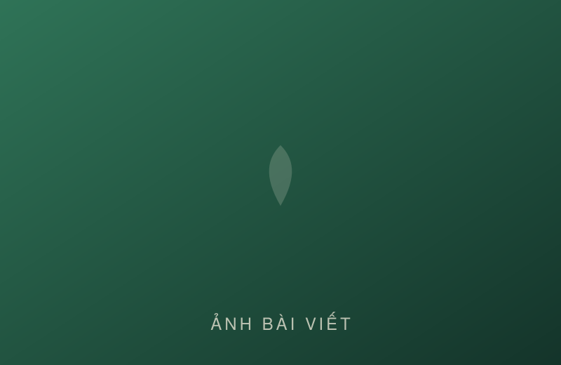
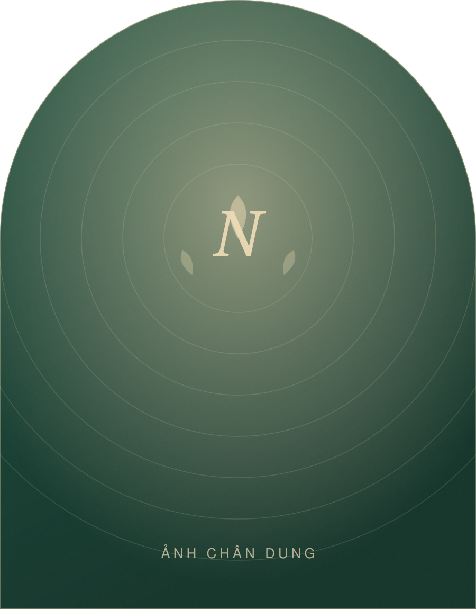
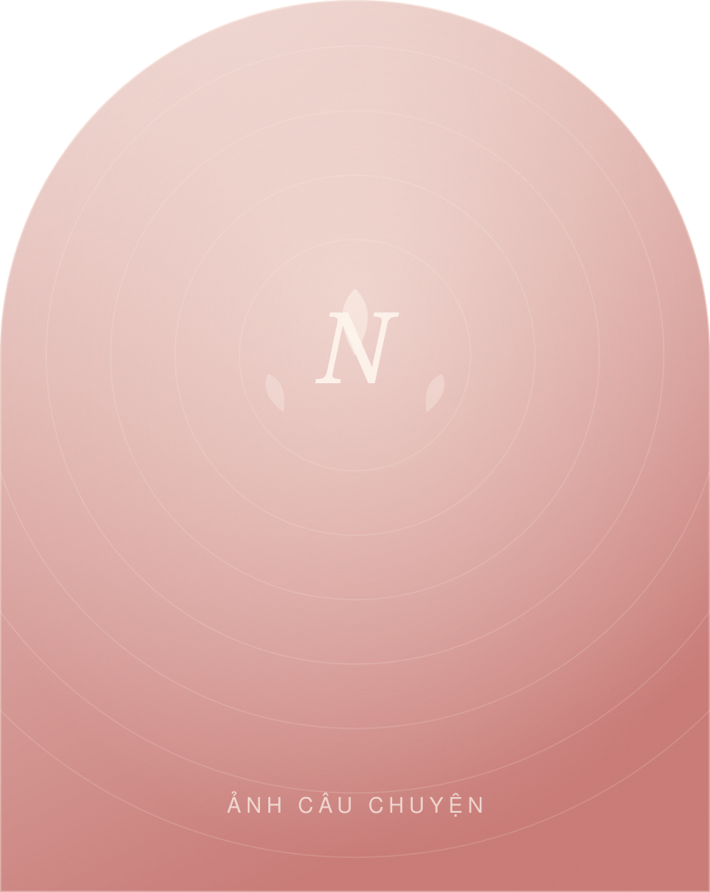
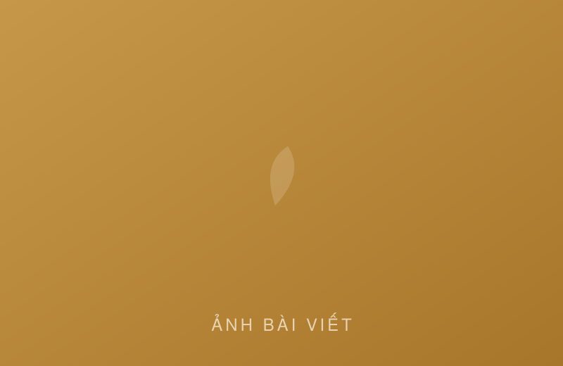
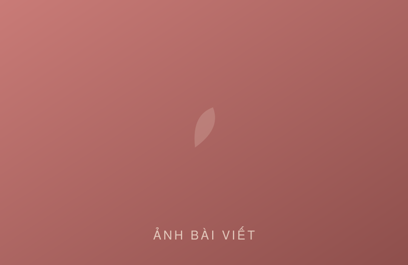

Bữa cơm 60.000đ vẫn đủ chất — tôi đi chợ thế nào
Danh sách đi chợ thật của một tuần, kèm cách chọn thực phẩm rẻ mà không nghèo dinh dưỡng.
Người đồng hành dinh dưỡng & sức khoẻ gia đình
Tôi là Nga — con cả trong một mái nhà nhỏ. Năm ấy, tôi gấp sách lại giữa chừng để hai đứa em được tiếp tục đến trường. Ba mươi năm sau, tôi mở lại trang sách của chính mình — lần này để gieo cho hàng nghìn gia đình một điều quý hơn cả tấm bằng: sức khoẻ và sự bền lòng.


Câu chuyện
Nhà tôi có ba chị em. Bố mẹ làm nông, mùa được mùa mất. Năm tôi học dở dang, bố ngồi rất lâu bên hiên rồi nói một câu mà đến giờ tôi vẫn nghe rõ trong đầu: “Nhà mình chỉ đủ cho hai đứa thôi con ạ.”
Tôi là chị cả. Tôi gấp sách lại.
Tôi không bỏ học. Tôi chỉ đổi lớp học — từ trường làng sang ruộng đồng, gian bếp và những đêm thức trắng.
Những năm sau đó, tôi làm đủ nghề. Đôi tay chai đi, nhưng có một điều không bao giờ chai: niềm tin rằng tri thức là thứ duy nhất không ai lấy đi được của con người. Tôi không giữ được nó cho mình, thì tôi giữ nó cho các em.
Ngày em gái tôi cầm tấm bằng đại học, tôi đứng phía cuối hội trường, mặc chiếc áo đẹp nhất mình có. Không ai đọc tên tôi cả. Nhưng hôm ấy tôi biết mình đã tốt nghiệp — một ngôi trường không có giấy chứng nhận.
Rồi ở tuổi mà nhiều người nghĩ đã muộn, tôi bắt đầu học lại. Học về dinh dưỡng, về cơ thể con người, về cách một bữa cơm tử tế có thể thay đổi cả một gia đình. Tôi học chậm hơn người khác, nhưng tôi có thứ họ không có: ba mươi năm hiểu thế nào là thiếu thốn.
Hôm nay, mỗi lần một người mẹ nhắn cho tôi “chị ơi, con em ăn ngon miệng rồi”, tôi lại thấy mình được đi học thêm một ngày nữa.
Nguyễn Thị NgaCon cả — và mãi là học trò của cuộc đời
Hành trình
Không có bước ngoặt nào diễn ra trong một ngày. Chỉ có những năm tháng đủ dài để một hạt giống kịp nảy mầm.
Tuổi thơ
Lớn lên giữa đồng ruộng, học cách nấu cơm cho cả nhà trước khi biết viết trọn một bài văn.
Năm 15 tuổi
Nghỉ học giữa chừng để hai em được tiếp tục tới trường. Một quyết định không ai bắt tôi phải chọn.
Những năm sau đó
Làm đủ nghề để nuôi các em ăn học. Học cách chăm sóc con người bằng chính đôi tay mình.
Ngày các em tốt nghiệp
Hai đứa em nên người. Đó là bản CV đầu tiên và đáng tự hào nhất của cuộc đời tôi.
Bước ngoặt
Bắt đầu học dinh dưỡng ở tuổi nhiều người cho là đã muộn. Chép tay từng trang tài liệu.
Hôm nay
Đồng hành cùng hơn 1.200 gia đình Việt xây dựng nếp ăn lành và một cơ thể khoẻ mạnh.
Những con số
0+
Năm gắn bó với dinh dưỡng & sức khoẻ
0+
Gia đình đã đồng hành
0
Buổi chia sẻ cộng đồng miễn phí
0
Đứa em đã nên người — lý do của tất cả
Tôi đồng hành cùng bạn
Không có phác đồ chung cho mọi người. Mỗi gia đình có một gian bếp, một nhịp sống và một nỗi lo riêng — tôi bắt đầu từ đó.
Đánh giá thể trạng, thói quen ăn uống và mục tiêu của riêng bạn, rồi cùng nhau dựng một kế hoạch bạn thật sự theo được.
Món ăn quen thuộc, nguyên liệu ngoài chợ, giá hợp lý — nhưng được cân đối lại để cả nhà cùng khoẻ.
Ba tháng đi cùng nhau, có người nhắc, có người lắng nghe — thứ mà một cuốn sách không làm được cho bạn.
Được chọn nhiều nhất
Buổi nói chuyện cho hội phụ nữ, trường học, doanh nghiệp. Tôi vẫn giữ thói quen làm miễn phí mỗi tháng một buổi.
Điều tôi tin
Không phải từ một loại thực phẩm chức năng đắt tiền. Từ nồi cơm, rổ rau và cách chúng ta ngồi xuống ăn cùng nhau.
Tôi từng đi một mình và biết nó dài thế nào. Nên tôi chọn nghề đi cùng người khác — không đứng trên bục giảng bài.
Tôi không hứa điều mình không làm được, không bán thứ mình không dùng, và luôn nói thật kể cả khi sự thật khó nghe.
Cảm nhận
Thư viện
Chia sẻ

Danh sách đi chợ thật của một tuần, kèm cách chọn thực phẩm rẻ mà không nghèo dinh dưỡng.

Vì sao “ăn kiêng” không phải câu trả lời, và ba thay đổi nhỏ có tác động lớn nhất.

Về những quyển vở chép tay, những buổi học online lúc nửa đêm và cảm giác sợ mình quá muộn.
Hỏi & Đáp
Nếu câu hỏi của bạn chưa có ở đây, cứ nhắn cho tôi. Tôi trả lời tất cả tin nhắn, thường trong vòng 24 giờ.
Gửi câu hỏi cho tôiChúng ta trò chuyện khoảng 60 phút, trực tiếp hoặc qua Zalo/Google Meet. Tôi hỏi về thói quen ăn uống, giấc ngủ, công việc và cả những khó khăn rất đời thường của bạn. Kết thúc buổi đầu, bạn nhận được một bản đánh giá và ba việc cụ thể để bắt đầu ngay.
Không. Nguyên tắc của tôi là bữa ăn trước, sản phẩm sau. Chỉ khi cơ thể bạn thật sự thiếu một chất nào đó và không bù được bằng thực phẩm, tôi mới đề cập — và luôn nói rõ vì sao.
Có, nhưng luôn song song với bác sĩ điều trị của bạn. Tôi hỗ trợ phần dinh dưỡng và lối sống, không thay thế chỉ định y khoa. Nếu tình trạng vượt ngoài phạm vi của tôi, tôi sẽ nói thẳng và giới thiệu bạn tới đúng người.
Phần lớn mọi người thấy khác biệt về giấc ngủ và mức năng lượng trong 2–3 tuần. Những thay đổi về cân nặng, chỉ số máu cần 8–12 tuần. Tôi không hứa “7 ngày lột xác” — đó không phải cách cơ thể vận hành.
Buổi trò chuyện tìm hiểu đầu tiên (20 phút) luôn miễn phí. Sau đó tuỳ chương trình bạn chọn, tôi sẽ báo mức phí rõ ràng ngay từ đầu, không phát sinh. Với các hoàn cảnh khó khăn, mỗi tháng tôi dành vài suất đồng hành không thu phí.
Liên hệ
Không cần chuẩn bị gì cả. Cứ viết ra điều đang khiến bạn bận lòng nhất về sức khoẻ của mình hoặc của người thân — tôi sẽ đọc và trả lời bằng chính chữ của mình.
“Ngày xưa tôi phải gấp sách lại vì nhà không đủ tiền.
Bây giờ tôi mở sách ra, và không tính tiền ai cả — cho đến khi họ thật sự muốn đi cùng tôi.”
— Nguyễn Thị Nga
Bắt đầu từ một cuộc trò chuyện